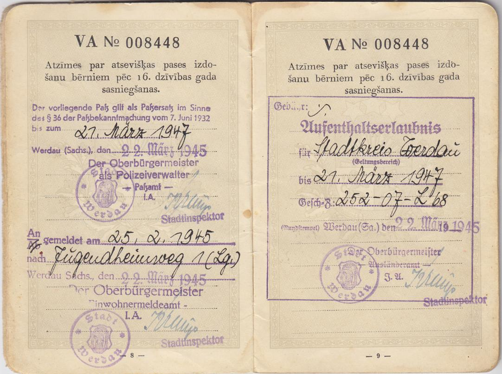

17. okt. Izbraucam uz Schirpicu un izejam uz nometni Argenavu.
18. okt. Nometnē 5 km no Argenavas pilsētas.
19. okt. Apskatu nometni kura atrodas lielā meža vidu. Laiks ir diezgan silts.
30. okt. Brauciens no Sirpicas uz otru nometni 7 km aiz Tornas stacijas.
Nov. pavadam Pozendorfas nometne rokot tanku grāvus 2½ m dziļus un 5 m plat.
14. nov. 11 Pirmais sniegs. 14 Pirmo reizi uzsalst, bet 17 ir atkal silts. Šai nometne uz poļu laukiem novāktiem ir ļoti daudz dabujami kartupeļi un cukura bietes.
18. nov. Atrodamies Pozendorfā un gājām paradē pēc pusdienas. Līdz pulkst 12. rokam tanku grāvi.
1. dec. Gājiens uz citu nometni no sādzās Leibisch 2km. Pārgaiens 15km. Un šai dienā arī beidzamo reizi satiku Jansons Rūdolfu.
17 Oct -- We travel to Schirpic (Cierpice) and on to an encampment at Argenau (Gniewkowo). 23 km southwest of Toruń.
18 Oct -- At the encampment 5 km from the town of Argenau.
19 Oct -- I look around the encampment which is in the middle of a large forest. It's quite warm.
30 Oct -- Depart from for another encampment 7 km past Toruń station.
We spend November at Pozendorf camp digging tank trenches 2½ m deep and 5 m wide. Cannot determine the location of Pozendorf camp which is mentioned in several accounts and said in L. k. p. 358 to be 8 km north of Toruń. Part of the regiment had been in Papowo, said to be 10 km north of Toruń before moving to Pozendorf, which would place the encampment somewhere in the region of 53° 5'25.74"N 18°38'0.08"E.
14 Nov -- 11:00 First snow. 14:00 First chill, but by 17:00 it's warm again. This encampment is on fields cleared by the Poles and there are lots of potatoes and sugar beets to be found.
18 Nov -- We are in Pozendorf and on parade in the afternoon. Until 12:00 we did tank trenches.
01 Dec -- March to another encampment 2km from Leibisch village. Marched 15km. This is the last day I saw Rudolfs Jansons.
2. dec. No kādas citas nometnes pienāca jaunas jaunas latviešu vienības.
3. dec. Ejot pēcdusiemam uz virtuvi satiku Kaleja Jāni un Kalniņa Koļi kuri arī pastāsitja kā nometnē ir Vītola Jānis.
24. dec. Svētku vakara uzdedzinājam egliti un katris atstastijām kur atradamies iepriekšeja svētku vakarā. Uz svet. vācieši iedeva 1/3 l vīnu 250 gr degvīna 10 kūciņas 1/2 kukulīti baltmaizes un 1500 gr rupjmaizi un pusdinas zupu.
02 Dec -- New Latvian units arrived from some other encampment.
03 Dec -- Going to the kitchen in the afternoon I met Jānis Kalejis (J.K.) and Nikolājs "Koļa" Kalninš (N.K.) who told me that Jānis Vītols (J.V.) is also at the encampment.
24 Dec -- On Christmas Eve we lit candles on a Christmas tree and each of us told where we had been last Christmas Eve. For Christmas the Germans gave us 1/3 L wine, 250 gm spirits, 10 biscuits (small cakes), 1/2 loaf white bread and 1500 gm brown bread and soup for lunch.
1. jan. Nedaram neko jeb guļam teltī un katras dara šo to. Es aizgāju arī pie Saltupa, Vītoļa, Kalniņa. Kur Saltups man iedeva maizes šķēli (Lielākā dāvana).
15. jan. Izškiros ar J.K. J.V. N.K. kuri tika pārkomendēti uz citu vienību un nometni.
20. jan. Pulkst 15:30 izejam no nometnes. Gājiens visu nakti apm. 52 km. Galīgi stīvi no rīta iesoļojam sādzā Schuliz 17 km no Brombergas.
21. jan. Plkst 8 izejam cauri Brombergai un Neinheimu (sic). Tur nonākam tikai 8 no rīta noiets 35 km. Pirmais sīvēns un vistas.
22. jan. Dodamies tāļāk. Walstati uzbruka krievu tanki. Trakata bēkšana, nosolojam 40 km. No rīta 7:00 esam ciema nometamies skola Eichfeldā.
01 Jan -- We don't do anything or lie around in our tents, each one does this or that. I visited Saltups, Vītolinš and Kalninš. There Saltups gave me a slice of bread (the greatest of presents).
12 Jan -- Russian assault on East Prussia begins.
15 Jan -- I am seperated from J.K. (Kalejs), J.V. (Vītols), and N.K. (Kalninš) who were transfered to a different unit and encampment.
20 Jan -- At 15:30 we set out from the encampment. We march all night (about 52 km). Completely stiff in the morning we march into the village of Schultiz (Solec Kujawski) 17 km from Bromberg (Bydgoszcz).
See L. k. p. 358 ff. It seems that various units including the 15th Grenadier Div. were amalgamated to form Waffen Gren. E-Rgt. 1 at this time: The amalgamation had not been completed when, on 20 January, as a result of the beginning of the Russian offensive the Regiment was ordered to retreat in the direction of Bromberg. The Regiment consisted of six battalions, aprox. 3500 troups. It had no carts, nor any other means of transport apart from hand drawn sleds; the majority of the troups were poorly clothed, with tattered footware, unarmed, leaderless, no water, in fact a thrown together bunch .... During the march many fell by the wayside as a result of injuries The sick had to be left behind, because there was simply no way of transporting them.
21 Jan -- At 8:00 we go thru Bromberg and Neuheim (Kosowo). We only get there at 8:00 in the morning (of 22 Jan.) - 35 km travelled. First pig and chickens.
From L. k. p. 360: Serious problems were created by the lack of supplies which forced the troups to scavange for food, leading to conflict with local inhabitants. Ironically much livestock was subsequently left behind as even locals were forced to flee ahead of the advancing Russians.
22 Jan -- We move on. Russian tanks have attacked Walstat. Desperately fleeing we have travelled 40 km. By 7:00 we have arrived in Eichfelde (Dębiny) and take shelter in a school building.
From L. k. p. 360: Some units had been overtaken by Russian tanks with the loss of 70 killed and 20 wounded. Communications with command are now lost, no further orders can be received. The Regiment continue to march North-West ....
23. jan. Atkal tālāk cauri Zempelburgai un gulējam 2 km no tās lauku māja. Noiets 14 km.
24. jan. Plkst. 10:00 rītā izejam tālāk cauri pilsetai Grunavai, tad lidz miestam Mossi un 2km apmetamies muižā noiets 30km. Edam abolus un iegustam jaunas ragavinas.
25. jan. Dzīvojam un atpūšamies.
27. jan. Izejam no rīta 7:00 lielā sniega putenī cauri sādžai Damnica, tad pilsētai Schlachavu un apmetanies Polnicā bet pēc stundas atkal tālāk un apmetamies sadžā Damerav. Šeit dzīvojam francu gustekņu telpās. Un iegūstam aitas gaļu. Noiets 40km. Briesmīgs sniega putenis.
30. jan. No rīta 7:00 atstājam Dameravu nakosa vieta apmetamies pilsētiņā Steger kura ieejam vēlu vakarā. Noiets 35km. Šausmīgs putenis.
23 Jan -- Further again thru Zempelburg (Sępólno Krajeńskie) and we sleep in a country house 2 km from there. 14 km travelled.
24 Jan -- At 10:00 in the morning we go further through the town of Grunau (Stare Gronowo), then to the small village of Mossin (Mosiny) and after 2km we put up in a manor house - 30km covered. We eat apples and get ourselves a new sledge.
25 Jan -- We rest.
27 Jan -- We set off in the morning at 7:00 amidst a great snow storm through Damnitz (Dębnica) village, then through the town of Schlochau (Człuchów) and take a break at Pollnitz (Polnica) but after an hour we move on yet again to the village of Damerau (Dąbrówka) where we put up in French POW quarters. We get hold of some mutton. We have covered 40km. There's a terrible snow storm.
30 Jan -- We leave Damerau at 7:00 in the morning and the next place we put up at is the little town of Stegers (Rzeczenica) where we arrive late at night. 35km covered. Terrible snow storm.
31. jan. No rīta atstajam Stegeru un dodamies tāļāk DW virzienā un atstājamies pie Hammerstein. Prāva pilsētina kurai talak cauri atpakaļ, virzienā uz DR un 16:00 esam miestā Gegenfelda kur novietojamies. Noiets 22km. Tiek apgādāta cūkas gaļa.
1. feb. Tīram sniegu no ceļa un vakarā krietni iemetam jēlspirtu.
4. feb. Puklst. 7:00 izejam no Gegenfeldes un dodamies virieznā DA. Izejam cauri pilsētiņai Barenhütte un iesolojam Marienfelde kur guļam izbēgušo mājā. Tuvumā dzirdam kaujas trokšņi. Noiets 30km. Šeit pagatavojam garšīgus kāpostus.
6. feb. Izejam no Marienfeldes plk. 7:00 un atkal uz Mossin, tai cauri, tāļak otreiz cauri Damnicai un ieejam miestā Döringsdorf. Šeit nogaidam 3 st. un pēc tam atpakal uz .... Jansnik, bet ceļā vēl reiz nak pavēle un soļojam jauv galīgi par tumsu vēl reiz uz Döringsdorfu kur iekartojamies. Mūsu vāds apmetams 0.5km no miesta, lauku mājās. Šai diena noiets 25km. Ir gadījušies laipni vācieši un pacienā ar pienu.
31 Jan -- In the morning we leave Stegers and head in a South-Westerly direction where we stop in Hammerstein (Czarne). A sizable town through which we head back West and at 16:00 we are in the small village of Geglenfelde (Wyczechy) where we settle in. 22km covered. We are given some pork.
From L.k., v. 2, p360 ff: "In Hammerstein the Regiment received orders from XVI Corp Headquarters to establish camp in the Hammerstein district and without delay begin road clearing works. Having pointed out that, the Regiment in relation to this had neither shovels, nor brooms and that it would be difficult to acquire these from remaining residents, in addition that, many in the Regiment had tattered footware and that it was difficult to supply members with warm food, I received a stern reply: 'The Corps does not have access to tools. The Regimental Commander should be intelligent enough to work out how to get by. You are held accountable for implementing this order.' Despite the lack of tools and other hardships, the task was accomplished and the specified roads were reasonably quickly cleared. Undoubtedly, soldiers increasing came to the view that they were regarded merely as a work battalion, which found itself subjected to worse conditions than POWs, for the latter had decent accomodation and supplies.... Further orders basically moved the Regiment from one place to another in the Schlochau - Hammerstein district, initially clearing roads, but later, to evade attacks from the ememy. All that, as an unarmed, unclothed, untrained, disjointed and continuously underfed throng of people pointlessly shoved from one place to another with the enemy ever closer. This continued untill 18.2 when the Regiment was moved by rail to the Swinemünde (Świnoujście) district." - Leut. Col. O. Meija.
01 Feb -- We clear the roads of snow and at night we well and truely get stuck into some raw alcohol.
04 Feb -- At 7:00 we leave Geglenfelde heading in a South-East direction. We go through the small village of Bärenhütte (Biernatka) and march into Marienfelde (Myśligoszcz) where sleep in an abandoned house. We hear the noise of battle close by. 30km covered. Here we prepare some delicious cabbage.
06 Feb -- We leave Marienfelde at 7:00 and return to Mossin (Mosiny), through there, further a second time through Damnitz (Dębnica) we enter the village of Döringsdorf (Doręgowice). We wait there for 3 hours and return to ....
06 feb..... Jeznik (Jęczniki), but on the way yet another order is received and we march now in complete darkness again to Döringsdorf were we settle in. Our platoon is located 0.5km from the village in a farm house. Today we have travelled 25km. We have encountered some kind Germans who give us some milk.
9. feb. P. 6:00 izejam atpakal līdz Damnicai tad cauri Bischafsvaldei un novietojamies ērtā istabiņā Laasen miestā noiets 30km. skaista diena. Iespaids labs. Paciena ar labiem ēdieniem. Garais uzspēlē klavieres.
11. feb. P. 4:30 izejam no Lassen cauri Hammersteinei, Klein Küddei un Groß Küddei. Tulīt az tās novietojamies darba dienestnieku meitenu baraka. Šodien noiets 20km. Kopā līdz šim noiets 373km.
For photos of Latvians of the 15 WSS, 15 Sapper Battalion in the area around this time see http://forum.axishistory.com/viewtopic.php?f=51&t=83496&p=894817#p894817
12. un 13. feb. atpūšanās.
06 Feb -- .... (Jęczniki), but on the way yet another order is received and we march now in complete darkness again to Döringsdorf were we settle in. Our platoon is located 0.5km from the village in a farm house. Today zwe have travelled 25km. We have encountered some kind Germans who give us some milk.
09 Feb -- At 6:00am we go back to Damnica then through Bischafswalde and settle into a comfortable room in the town of Laasen (Łoża), 30km covered. Beautiful day. Good impression. Treat yourself to good food. The old man plays the piano.
12 & 13 Feb -- Resting
12 - 15 Feb -- We knew very little about Mum's whereabouts during the War but she sometimes suggested she had been in a railway station in Dresden (capital of Saxony) when it was bombed between 13 and 15 February 1945. She used to say that it was during the bombing that she lost most of the possesions she had with her.

Annotations in Mum's Latvian passport have her registered on 22 March 1945 at a hostel at Jugendheimweg 1 from 25 Feb. 1945 in Werdau, Saxony.
15. feb. Turpinam ceļu cauri Neuštetinai tālāk cauri Eichenrigai un apmetamies lauku mājā. Noiets 27km.
18. feb. Pavadam mirušo uz kapiem no musu rotas Stuķēns.
19. feb. Pulkst. 2:00 dodamies atpakal no Eichenrigas uz Neustetinu un p. 6:00 uzlādejamies 10:00 izbraucam Kolbergā kur paliekam panakti. Noiets 20km.
20. feb. Turpinam ceļu sasniedzam Sarnamindi.
21. feb. Iebraucam Wallinsala pie Uderas upes grīvas kur ceļamies ar motora prāmi (ar visu vagonu) uz Swinamides pusi. Visma brauciens garlaicīgs un grūts jo esam par daudz sablīvēti. Visu dienu pavadam vaganas.
14 Feb -- Early in the morning we were able to wash ourselves.
15 Feb -- We continue our journey through Neusztětin, then through Eichenrig and stay in a country house. Distance 27km.
18 Feb -- We bury a casualty from our Company (Stuķēns)
19 Feb -- At 2:00 we head back from Eichenrig to Neustetten and at 6:00 we board a train. At 10:00 we leave for Kolberg where we stay until the evening. Distance 20km.
20 Feb -- We continue the journey and reach Swinemünde (Świnoujście)
21 Feb -- We arrive at Wolin Island at the mouth of the Oder River where we take a motor ferry (with the entire wagon) towards Swinemünde. The journey is boring and difficult because we are too packed in. We spend the whole day in the wagons.
22. feb. Plkst. 10:00 atstājām vagonus un dodamies cauri Svinamidei uz osta kur pārceļamies upei pāri ar kuģīti un soļojam cauri pilsētiņai Mosdray (Misdro - Międzyzdroje) miestam Nenesdorf (Neuendorf - Wisełka), Kusarvai (Kolzov - Kołczewo) un apmetamies Duvenawas pilsētā (Berg Dievenow - Dziwnów) novietojamies armijas kazarmēs. Pirmā skaistā diena šinī gada bet vakarā ļoti nogurusi gaidām uz novietošanas telpās 23:00. Šodien noiets 43km. Šis pārgājiens priekš manis bija ļoti grūts. Jo labā kājā dabuju 3 tulznas bet kresā 1 tulsnu. Naktī no 22:00 uz 23:00 redzēju sapni otro reizi tevi sievine. Laikam tu biji mani nākusi apsveik dzimšanas dienā. Ģērbusies bija zilājā kletā, (Tas ir vadmalas gaiši zilā).
23. feb. Ierīkojamiies telpās pārkravājamies no vienas telpas otra, kamēr tālāk esam visi kopā.
22 Feb -- At 10:00 we left the wagons and went through Swinamid to the port where we crossed the river by boat and walked through the town of Mosdray (Misdro - Międzyzdroje) to the towns of Nenesdorf (Neuendorf - Wisełka), Kusarva (Kolzow - Kołczewo) and settled in the town of Duwenawa (Berg Dievenow - Dziwnów) where we stayed in the army barracks. The first beautiful day this year but in the evening very tired we waited for accomodation. 23:00. Today we walked 43km. This hike was very difficult for me. Because I got 3 blisters on my right foot and 1 blister on my left. At night from 22:00 to 23:00 I saw a dream for the second time about you my wife. It seemed you had come to greet me on my birthday. You were dressed in a blue dress (the one with the blue border).
23 Feb -- We set up in the rooms, move from one room to another, until we are all together.
The 15th Waffen Grenadier Division of the SS (1st Latvian) surrendered in late April and early May 1945 to the Western Allies. Rather than surrendering as an intact unit, the division broke apart during the chaotic final weeks of World War II. According to the diary his "pulka" (elements of 15th Waffen Grenadier division) had broken up in the days before 3 May with various groups making their way as best they could. He wrote that the group he was with surrendered to the English ("angļi”) on 3 May at Selmsdorf (about 2km?) from Sülsdorf.